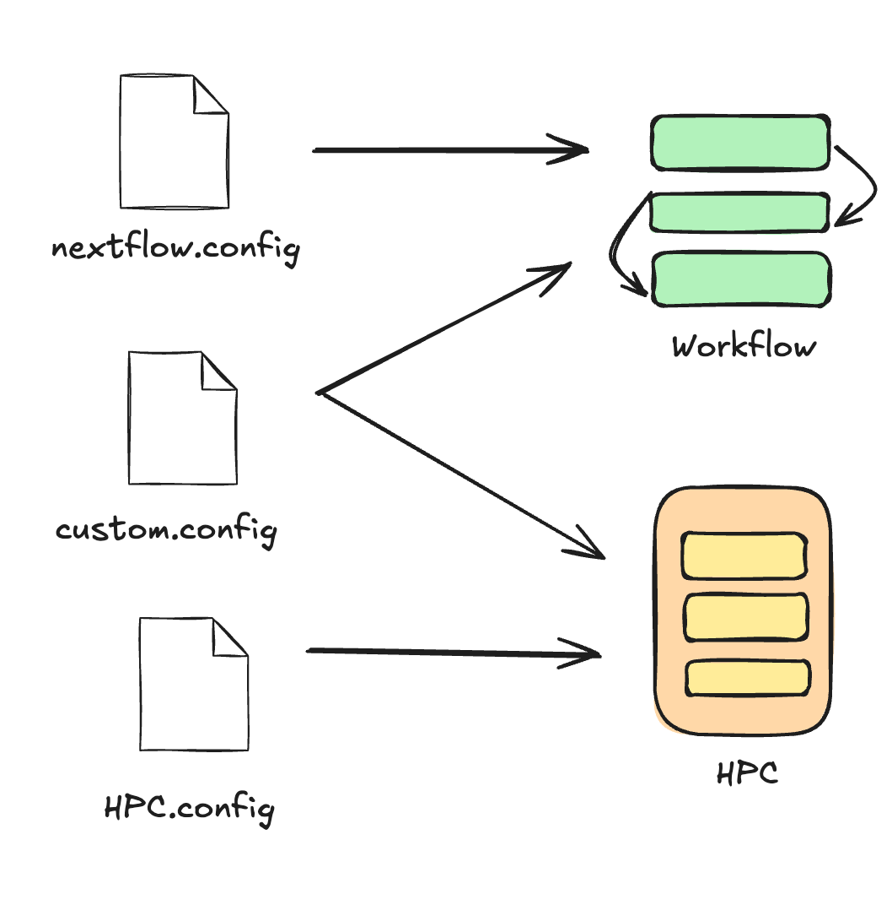

Running a custom pipeline on HPC
Learning objectives
- Identify best practices for benchmarking and configuring pipelines, step-by-step
- Troubleshoot common HPC and scheduling errors by inspecting task logs and interpretting exit codes and error messages
- Know how to find and specify system-dependent HPC values such as queues/partitions
- Recall how Nextflow interacts with HPC components
TODO these learning objectives arent accurate, update them
Testing and developing in the right environment
For the workshop, we have pre-pulled containers and use them from the cache, and as data is small and the workflow runs quickly, we will be running them on login nodes.
We recommend using interactive jobs for testing and debugging
workflows directly on compute nodes instead of the login nodes. Alternatively,
if you want to schedule your Nextflow head job, ensure that your run.sh
script includes the appropriate scheduler options.
See the recommendations on running the head job for Gadi and Setonix.
It is useful to develop your pipelines using a small, representative subset of your data. This allows you:
- Rapidly iterate your workflow design
- Validate environment and software set up
- Tune pipeline configuration without burning service units
- Reduce queue wait times
- Estimate basic performance characteristics of each process
2.1.1 Run without configuration
We will start configuring our custom pipeline with using a subset of raw reads from a single individual (NA1287) in our sample cohort. This is a good proxy for the other two samples as they all contain the same subset of chromosomes (20, 21, and 22) and have been sequenced to the same depth. Once we’re confident everything works as intended, we will scale up to run on the full dataset.
Let's start by running the pipeline out of the box to identify what we need to configure:
Exercise
- Load the Nextflow module, following the same method we learnt yesterday:
- Run your Nextflow command out of the box:
Output
N E X T F L O W ~ version 24.04.5
Launching `main.nf` [suspicious_almeida] DSL2 - revision: 5e5c4f57e0
executor > local (2)
[a3/a6da06] FASTQC (fastqc on NA12877) [100%] 1 of 1, failed: 1 ✘
[16/860647] ALIGN (1) [100%] 1 of 1, failed: 1 ✘
[- ] GENOTYPE -
[- ] JOINT_GENOTYPE -
[- ] STATS -
[- ] MULTIQC -
ERROR ~ Error executing process > 'FASTQC (fastqc on NA12877)'
Caused by:
Process `FASTQC (fastqc on NA12877)` terminated with an error exit status (127)
Command executed:
mkdir -p "fastqc_NA12877"
fastqc -t 1 --outdir "fastqc_NA12877" --format fastq NA12877_chr20-22.R1.fq.gz NA12877_chr20-22.R2.fq.gz
Command exit status:
127
Command output:
(empty)
Command error:
.command.sh: line 3: fastqc: command not found
Work dir:
/scratch/project/username/nextflow-on-hpc-materials/part2/work/a3/a6da061dd65d454add3f000923235d
Tip: when you have fixed the problem you can continue the execution adding the option `-resume` to the run command line
-- Check '.nextflow.log' file for details
Output
N E X T F L O W ~ version 24.10.0
Launching `main.nf` [trusting_brown] DSL2 - revision: 5e5c4f57e0
executor > local (2)
executor > local (2)
[e6/21a49e] FASTQC (fastqc on NA12877) [100%] 1 of 1, failed: 1 ✘
[68/bda517] ALIGN (1) [100%] 1 of 1, failed: 1 ✘
[- ] GENOTYPE -
[- ] JOINT_GENOTYPE -
[- ] STATS -
[- ] MULTIQC -
ERROR ~ Error executing process > 'ALIGN (1)'
Caused by:
Process `ALIGN (1)` terminated with an error exit status (127)
Command executed:
bwa mem -t 1 -R "@RG\tID:NA12877\tPL:ILLUMINA\tPU:NA12877\tSM:NA12877\tLB:NA12877\tCN:SEQ_CENTRE" ref/Hg38.subsetchr20-22.fasta NA12877_chr20-22.R1.fq.gz NA12877_chr20-22.R2.fq.gz | samtools sort -O bam -o NA12877.bam
samtools index NA12877.bam
Command exit status:
127
Command output:
(empty)
Command error:
.command.sh: line 2: samtools: command not found
.command.sh: line 2: bwa: command not found
Work dir:
/scratch/project/username/nextflow-on-hpc-materials/part2/work/68/bda517eeaa47f5ba24a9c401bdeb0e
Tip: view the complete command output by changing to the process work dir and entering the command `cat .command.out`
-- Check '.nextflow.log' file for details
Why did it fail?
Use the output printed to your screen, .nextflow.log file in your current directory, and .command files in the work directory of the failed task to identify what caused your workflow run to fail.
Answer
Our run stopped because one or more processes failed. Exit status 127 in Linux environments means your system was not able to find the command referenced in the process. This suggests the software is not available in our environment.
2.1.2 And run with containers
All our process modules specify a container to run inside. This can only happen if Singularity is explicitly enabled in our configuration. Let's enable this in our system-specific configuration files and attempt to run again:
Exercise
Load the Singularity modules, following the same method we learnt yesterday:
Add the following to your system-specific config file that you can find in config/. Remember, we have already enabled profiles in our nextflow.config, so no need to edit that file.
process {
// Load the globally installed singularity module before running any process
module = 'singularity'
}
singularity {
// Explicitly turns on container execution
enabled = true
// Automatically bind-mount working directory on scratch and common system paths
autoMounts = true
// Define location of stored container images
cacheDir = "/scratch/${System.getenv('PROJECT')}/${System.getenv('USER')}/nextflow-on-hpc-materials/singularity""${projectDir}/singularity"
}
process {
// Load the globally installed singularity/4.1.0-slurm module before running any process
module = 'singularity/4.1.0-slurm'
}
singularity {
// Explicitly turns on container execution
enabled = true
// Automatically bind-mount working directory on scratch and common system paths
autoMounts = true
// Define location of stored container images
cacheDir = "/scratch/${System.getenv('PAWSEY_PROJECT')}/${System.getenv('USER')}/nextflow-on-hpc-materials/singularity"
}
- Run your updated Nextflow command:
Output
executor > pbspro (5)
[e4/dc7852] FASTQC (fastqc on NA12889) | 3 of 3 ✔
[3f/c0e6ae] ALIGN (1) | 1 of 1 ✔
[d0/6677c4] GENOTYPE (1) | 1 of 1, failed: 1 ✘
[- ] JOINT_GENOTYPE -
[- ] STATS -
[- ] MULTIQC | 0 of 1
ERROR ~ Error executing process > 'GENOTYPE (1)'
Caused by:
Process `GENOTYPE (1)` terminated with an error exit status (247)
Command executed:
gatk --java-options "-Xmx4g" HaplotypeCaller -R Hg38.subsetchr20-22.fasta -I NA12877.bam -O NA12877.g.vcf.gz -ERC GVCF
Command exit status:
247
Command output:
(empty)
Command error:
Output
N E X T F L O W ~ version 24.10.0 14:13:57
Launching `main.nf` [dreamy_cuvier] DSL2 - revision: 5e5c4f57e0
executor > slurm (8)
[c4/babfde] FASTQC (fastqc on NA12877) | 3 of 3 ✔
[6f/7a523b] ALIGN (1) | 1 of 1 ✔
[bf/525fc9] GENOTYPE (1) | 1 of 1 ✔
[5c/ea7cb0] JOINT_GENOTYPE (1) | 1 of 1 ✔
[7f/4e64dc] STATS (1) | 1 of 1 ✔
[70/254c9e] MULTIQC | 1 of 1 ✔
Completed at: 05-Nov-2025 13:59:02
Duration : 2m 21s
CPU hours : (a few seconds)
Succeeded : 8
Zoom react!
- If your job has finished succesfully, react "Yes" on Zoom, and "No" if it returned an error
- Similarly, react "Yes" if you are running it on Gadi, and "No" for Setonix
Although both systems run Nextflow with Singularity, Gadi and Setonix have different environmental variables, filesystem layouts, job schedulers, queue structures, module names, and container cache behaviour. These differences affect how Nextflow executes each process.
Let's explore what resources were actually used and compare them to what was allocated, by inspecting the logs and system job information using the methods from Part 1.
We will use the respective job scheduler introspection tools to observe the resources used on both both systems.
Exercises
Find the Job ID of the failed or completed GENOTYPE process in your .nextflow.log:
The output should look something like:
Nov-11 12:26:17.249 [Task submitter] DEBUG nextflow.executor.GridTaskHandler - [PBSPRO] submitted process GENOTYPE (1) > jobId: 154278383.gadi-pbs; workDir: /scratch/ad78/fj9712/nextflow-on-hpc-materials/part2/work/0b/465f7eacfa500698687ff12df65060
Nov-11 12:27:47.144 [Task monitor] DEBUG n.processor.TaskPollingMonitor - Task completed > TaskHandler[jobI d: 154278383.gadi-pbs; id: 5; name: GENOTYPE (1); status: COMPLETED; exit: 0; error: -; workDir: /scratch/a d78/fj9712/nextflow-on-hpc-materials/part2/work/0b/465f7eacfa500698687ff12df65060 started: 1762828007140; exited: 2025-11-11T02:27:35Z; ]
The value we need in this example is 154278383 - this corresponds to the job id that was scheduled.
Then, inspect the job resource usage. There are different tools used for different schedulers.
Use qstat -xf <job_id> to query for the resource usage and allocation
Job Id: 154038474.gadi-pbs
Job_Name = nf-GENOTYPE_1
Job_Owner = fj9712@gadi-login-05.gadi.nci.org.au
resources_used.cpupercent = 94
resources_used.cput = 00:02:50
resources_used.jobfs = 0b
resources_used.mem = 512124kb
resources_used.ncpus = 1
resources_used.vmem = 512124kb
resources_used.walltime = 00:03:03
job_state = F
queue = normal-exec
Use sacct with formatting to view key stats related to resource usage:
sacct -j <job_id> --format=JobID,JobName,User,CPUTime,TotalCPU,NCPUS,Elapsed,State,MaxRSS,MaxVMSize,Partition
JobID JobName User CPUTime TotalCPU NCPUS Elapsed State MaxRSS MaxVMSize Partition
------------ ---------- --------- ---------- ---------- ---------- ---------- ---------- ---------- ---------- ----------
34325657 nf-GENOTY+ fjaya 00:01:50 01:07.026 2 00:00:55 COMPLETED work
34325657.ba+ batch 00:01:50 01:07.023 2 00:00:55 COMPLETED 1566932K 0
34325657.ex+ extern 00:01:50 00:00.003 2 00:00:55 COMPLETED 0 0
In both cases, we can observe that the jobs were assigned the following resources:
| CPU | Memory | |
|---|---|---|
| Gadi | 1 | 512 MB |
| Setonix | 2 | 1.6 GB |
This is why explicit resource configuration is important. Even though the pipeline technically ran (or failed), these defaults are unsuitable for real data.
In this case, it shows that the GENOTYPE process needs at least 2 GB of memory. Let's explicitly configure that in the next step.
2.1.3 Why do we have so many configuration files?

[TODO] update figure
We use three different configuration files to keep our Nextflow workflows reproducible, modular, and portable across different systems. This setup not only ensures consistency when running the same pipeline in different environments, but also allows reuse of configuration components across multiple pipelines.
Each configuration file serves a distinct purpose:
-
nextflow.configis the main configuration file that defines the core behaviour of the workflow itself (e.g. main.nf). It includes parameters (params), and references to profiles. To maintain reproducibility, this file should not be modified during system-specific tuning. It should only change if the underlying workflow logic changes - that is, what gets run. -
config/pbspro.configandconfig/slurm.configdefine how the pipeline should run on a particular type of HPC system. These files specify details such as which executor to use (e.g. PBS or SLURM), whether to use Singularity or Docker, and other runtime behaviour. They do not control the internal logic of the pipeline. These files should be tailored to match the requirements and setup of the HPC infrastructure you are targeting. -
config/custom.configis where we bring it all together. This file contains system-specific process settings such as CPU and memory requests. It links what the workflow does with how it runs on a specific system. When developing or adapting a custom pipeline for an HPC environment, this is typically where most tuning happens to fit the specific node architecture, queue constraints, and resource optimisation.
While this structure is a useful starting point, it is not the only way to structure your configuration. The nf-core community have their own set of standards with some presets for some instutitions (there are ones available for Gadi and Setonix!). However, it is important to double check that these configs are suitable and optimal for your purposes. For more information see nf-core/configs
2.1.4 Minimal configuration to run on HPC
We will continue to get the pipeline running with a minimum viable configuration. This serves as a baseline to confirm everything is working correctly (such as scheduling, containers are enabled, etc.), prior to any fine tuning. We want to ensure that:
- Jobs are being scheduled correctly
- All process tasks and the pipeline complete successfully
TODO scheduler specific configs, instead of system-specifc configs.
Note
In Part 2 we will use the same queues and partitions:
- The
normalbwqueue on Gadi - The
workpartition on Pawsey
These are low-cost queues suitable for general compute jobs.
Here we assign the average number of cores available based on memory requirements. This will be revisited in the resourcing section.
Exercises
-
Create a new file
config/custom.config -
Add the following contents based on your HPC
Recall from Part 1 that Nextflow's executor is the part of the workflow engine that talks to the computing environment (whether it's a laptop or HPC). When running on a shared HPC system, these settings are important to include so you don't overwhelm the system (queueSize, pollInterval, queueStatInterval), or generate duplicated files in excess (cache, stageInMode), or run things in the wrong place (options).
TODO queue rate limit
Exercises
Open the pbspro.config or slurm.config and edit. We will add these HPC-friendly options.
params.pbspro_account = ""
executor {
// For high-throughput jobs, these values should be higher
queueSize = 30
pollInterval = '5 sec'
queueStatInterval = '5 sec'
}
process {
executor = 'pbspro'
module = 'singularity'
queue = 'normalbw'
clusterOptions = "-P ${System.getenv('PROJECT')}"
storage = "scratch/${System.getenv('PROJECT')}"
cache = 'lenient'
stageInMode = 'symlink'
}
singularity {
enabled = true
autoMounts = true
cacheDir = "/scratch/${System.getenv('PROJECT')}/${System.getenv('USER')}/nextflow-on-hpc-materials/singularity"
}
params.slurm_account = ""
executor {
// For high-throughput jobs, these values should be higher
queueSize = 30
pollInterval = '5 sec'
queueStatInterval = '5 sec'
}
process {
executor = 'slurm'
module = 'singularity/4.1.0-slurm'
queue = 'work'
clusterOptions = "--account=${System.getenv('PAWSEY_PROJECT')}"
cache = 'lenient'
stageInMode = 'symlink'
}
singularity {
enabled = true
autoMounts = true
cacheDir = "/scratch/${System.getenv('PAWSEY_PROJECT')}/${System.getenv('USER')}/nextflow-on-hpc-materials/singularity"
}
While we could manually run the Nextflow command each time, using a run script can reduce human error (missing a flag, typos) and is easier to re-run. This is especially useful in the testing and benchmarking stages.
Exercises
-
Create a new file called
run.sh -
Copy and paste the following code based on your HPC:
- Save the run.sh file (Windows: Ctrl+S, macOS: Cmd+S).
-
Provide execute permission by running
Exercise
Run your newly configured pipeline using by executing ./run.sh in the terminal.
Results
On both Gadi and Setonix, both runs should now be successful and executed on the respective scheduler.
Loading nextflow/24.04.5
Loading requirement: java/jdk-17.0.2
N E X T F L O W ~ version 24.04.5
Launching `main.nf` [determined_picasso] DSL2 - revision: 5e5c4f57e0
executor > pbspro (6)
[7b/16f7c2] FASTQC (fastqc on NA12877) | 1 of 1 ✔
[ec/5fd924] ALIGN (1) | 1 of 1 ✔
[17/803fe5] GENOTYPE (1) | 1 of 1 ✔
[0f/e21d58] JOINT_GENOTYPE (1) | 1 of 1 ✔
[40/0c6e28] STATS (1) | 1 of 1 ✔
[6a/94910b] MULTIQC | 1 of 1 ✔
Completed at: 10-Nov-2025 12:19:38
Duration : 4m 1s
CPU hours : (a few seconds)
Succeeded : 6
N E X T F L O W ~ version 24.10.0
Launching `main.nf` [nostalgic_bell] DSL2 - revision: 5e5c4f57e0
executor > slurm (6)
[a4/1eae6a] FASTQC (fastqc on NA12877) [100%] 1 of 1 ✔
[76/9e6fca] ALIGN (1) [100%] 1 of 1 ✔
[96/f57a2e] GENOTYPE (1) [100%] 1 of 1 ✔
[ec/547a9c] JOINT_GENOTYPE (1) [100%] 1 of 1 ✔
[88/b49a40] STATS (1) [100%] 1 of 1 ✔
[8d/b5b351] MULTIQC [100%] 1 of 1 ✔
Completed at: 10-Nov-2025 10:28:08
Duration : 3m 31s
CPU hours : (a few seconds)
Succeeded : 6
Summary
You’ve now built the scaffolding needed to begin fine-tuning your resource requests and exploring monitoring and optimisation techniques. In the next section, we'll start measuring actual resource usage and configuring processes more precisely for efficient use for the specific HPC system.